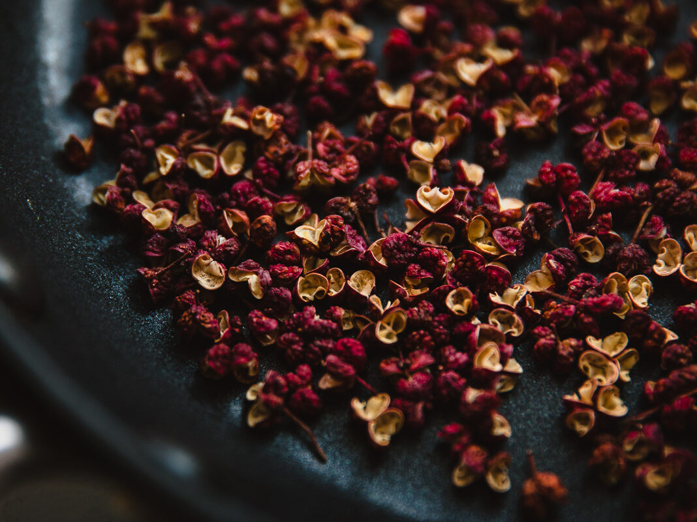

|

|
Qu'est-ce que le poivre de Sichuan ?
Le poivre de Sichuan est le fruit issu de l'arbuste Zanthoxylum simulans (ou Zanthoxylum
bungeanum), c'est-à-dire une baie et non un poivre, même s'ils sont souvent apparentés
Le poivre du Sichuan, appelé également poivre chinois ou baies chinoises, est l'une des plus
anciennes épices chinoises et un ingrédient phare de la cuisine de Sichuan. On obtient cette
épice en séchant et en moulant la coque entourant le fruit. Très utilisée dans la cuisine
asiatique, elle apporte à une multitude de plats des saveurs citronnées et boisées.
|